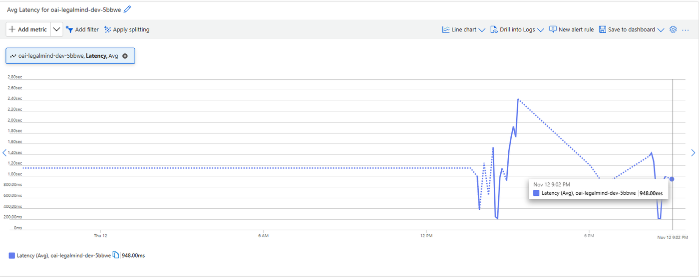

TL;DR — Every RAG tutorial adds steps: rewrite the query, generate a hypothetical answer, re-rank, reflect. Each is another model call. I built three small evaluation sets and measured mine. The semantic ranker was the biggest win; LLM query rewriting cost 1.4 seconds and improved nothing; and end-to-end testing found a bug that perfect retrieval metrics had hidden. Removing a step halved the latency.
LegalMind's pipeline had grown the way RAG pipelines do: every technique that sounded smart got a place. Query rewriting to expand legal abbreviations and translate English to Dutch. Hybrid search. A semantic re-ranker. Four specialist agents behind a router. A groundedness check. Each step was reasonable on its own. Together they made an answer take 15 seconds at the median and 40 at the tail.
So I stopped arguing with myself and measured.
Three evaluations, against the live system
| Evaluation | Data | Measures |
|---|---|---|
| Retrieval | 35 questions, each with the passage that must be found (30 Dutch, 5 English) | Is the right passage first (hit@1)? In the top 3? Mean reciprocal rank; latency — for five search modes |
| Routing | 24 messages, 6 per specialist agent | Does each question reach the right agent? |
| Generation | 23 questions through the live API (later 27): 19 answerable with expected facts, the rest unanswerable | Facts found, right source cited, groundedness (an LLM judge reads the full documents), unanswerable questions declined |
None of this is big. The corpus is three fictional documents and 41 chunks. It still found a bug, a useless step and a routing flaw.
What retrieval taught me
| Search mode | Right passage first | In top 3 | Median latency |
|---|---|---|---|
| Keyword (BM25) | 49 % | 69 % | 2.5 s |
| Vector | 63 % | 100 % | 3.6 s |
| Hybrid (keyword + vector, Reciprocal Rank Fusion) | 60 % | 89 % | 3.1 s |
| Hybrid + semantic ranker | 80 % | 94 % | 3.1 s |
| Hybrid + semantic + LLM query rewriting | 77 % | 91 % | 4.5 s |
(Latency measured from a laptop in Europe to Azure in the US — compare the rows with each other, not with production.)
Three surprises.
The semantic ranker was the biggest single win. It re-reads the top candidates together with the question using a cross-encoder and reorders them. Right-passage-first went from 60 % to 80 %, at no latency I could measure.
Hybrid wasn't automatically better than vector. On a small corpus, vector search already put the right passage in the top three every time — even for English questions over Dutch documents, because the embeddings are multilingual. Fusing in keyword results sometimes pushed a better passage down. The ranker fixed the order. On a large corpus full of exact identifiers — article numbers, case numbers — hybrid's advantage grows; on mine, the ranker mattered more.
Query rewriting — an extra LLM call on every question — cost 1.4 seconds and improved nothing. The ranker and the multilingual embeddings already handled synonyms, abbreviations and language. Rewriting is now a setting, off by default.
What end-to-end evaluation taught me
Retrieval looked great: the right source was cited for 100 % of answerable questions. But only 68 % of expected facts made it into the answers.
How can you cite the right document and miss what's in it?
The per-question table pointed at one path: questions the router classified as "general" — not for any specialist. Reading that code: it built the retrieved context, attached the citations to the response… and called the model with only the question. The passages never reached the prompt. The citations under those answers were decoration.
One-line fix. Groundedness 4.16 → 4.95 out of 5, facts 68 % → 82 %.
Routing had its own quiet flaw. "Wat staat er in artikel 5?" — what does article 5 say? — went to the legal research agent instead of document analysis. The routing prompt described what each agent does, but didn't say where the boundary was. It now has an explicit rule — what a document says versus what the law says — and routing went from 92 % to 100 %.
Latency, halved
Server-side, from Application Insights, successful POST /api/chat:
| Median | 95th percentile | |
|---|---|---|
| Before | 14.8 s | 39.5 s |
| After | 7.3 s | 15.7 s |
No faster model. No caching layer. One call removed (query rewriting), and one call that no longer failed and retried (the groundedness check from Part 2).

The model answers in about a second per call. The other six seconds are calls in sequence: route, answer, check.The model itself answers in about a second. The rest of the time is calls in sequence: embed, search, route, answer, check. The next win is parallelism — run the groundedness check while the answer streams — not a bigger model.
A note on judging with a model
The generation scores come from an LLM judge: gpt-4.1-mini reads the full source documents and scores each answer. It's the same model family as the generator, which makes it lenient, and it's noisy — about ±0.2 on a 5-point scale between identical runs. In one run it marked a confidently wrong answer as a refusal. I read the per-question tables, not just the averages, and I treat a difference of one or two questions as noise.
The lesson
Takeaways - Build the evaluation set first; argue about techniques second. Thirty-five retrieval questions and twenty-seven end-to-end questions were enough to make three decisions. - Measure every model call you add — some cost seconds and buy nothing. - Retrieval metrics and answer metrics measure different things. A system can find the right passage and still not use it. - Classification prompts need explicit rules for the boundary cases, and a labelled set to prove them. - Latency in an LLM app is usually the number of calls in sequence, not the speed of one.
Then I made the test harder — and found a failure that no amount of guardrail tuning could fix. That's Part 4.
LegalMind AI is open source: github.com/munyaradzi-zhou/LegalMind-AI. The sample organisation and documents are fictional; LegalMind is a demonstration, not legal advice.